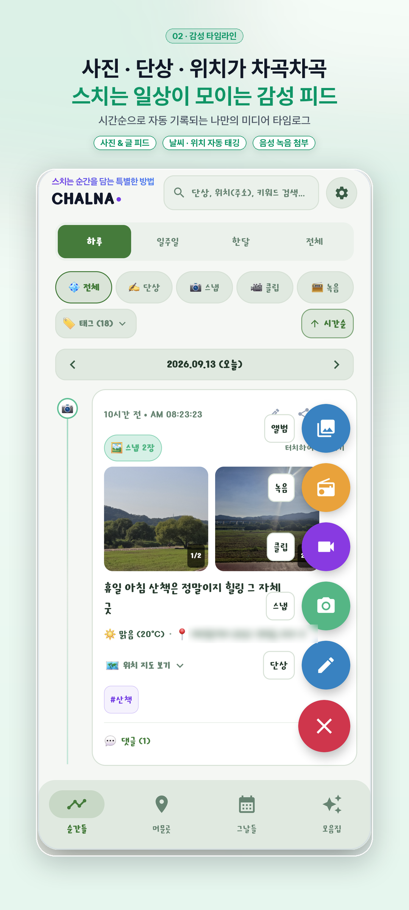
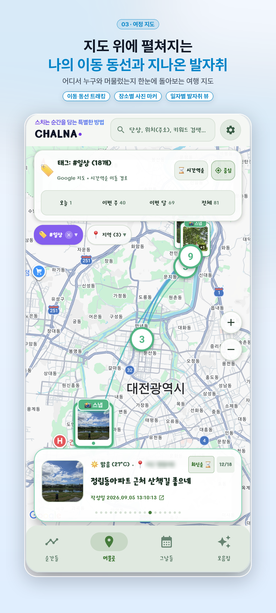
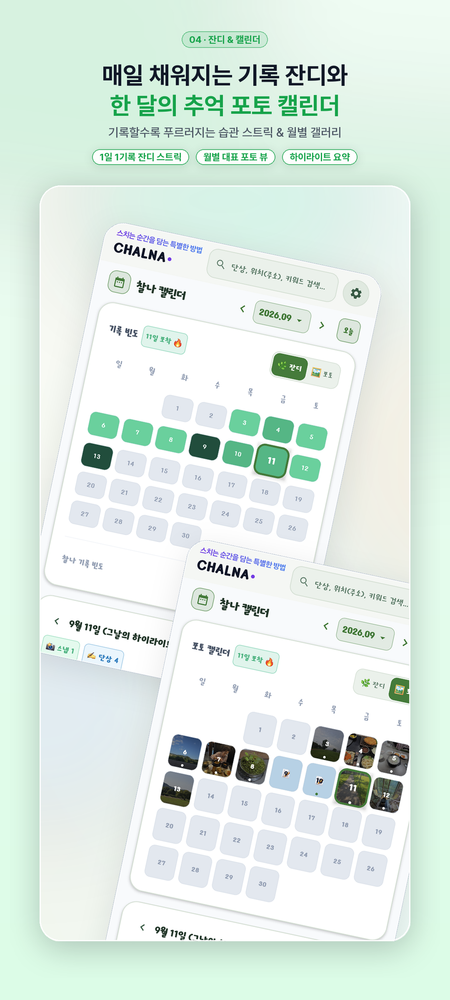
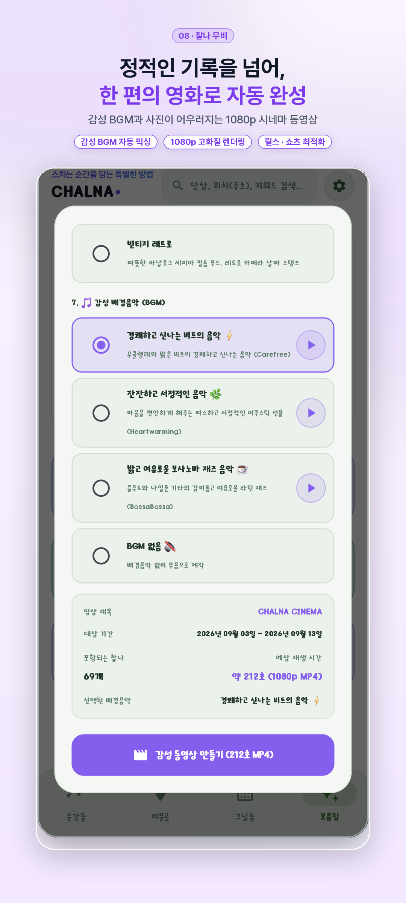
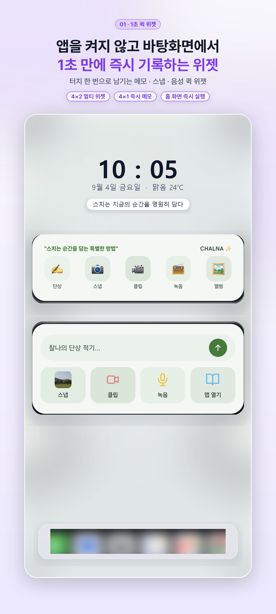

1. 앱 개요 (App Overview)
찰나(CHALNA)는 바쁜 일상 속에서 스쳐 지나가는 소중한 생각, 사진, 영상, 음성을 1초 만에 기록하고, 나만의 감성 다이어리와 지도, 출판물로 엮어주는 아날로그 감성 원터치 타임로그(Timelog) 애플리케이션입니다.
"스치는 순간을 담는 가장 특별한 방법, 찰나(CHALNA)"
1.1 4대 기록 유형
- ✍️ 단상 (Thoughts): 마크다운 스타일 체크리스트(To-Do 할 일)와 생각을 자유롭게 메모
- 📷 스냅 (Snaps): 무음 고속 촬영 및 최대 10장 콜라주, EXIF 위치 정보 자동 추출
- 🎥 클립 (Clips): 일상의 생생한 찰나를 담는 3초~10초 감성 미니 비디오
- 🎙️ 녹음 (Records): 생생한 현장 소리 녹음 및 Gemini AI 기반 실시간 텍스트 변환(STT)
1.2 시스템 요구사항
| 구분 | 상세 사양 |
|---|---|
| 지원 운영체제 | Android 8.0 (Oreo, API 레벨 26) 이상 |
| 권장 운영체제 | Android 13 (Tiramisu) ~ Android 16 최신 OS |
| 앱 버전 | v1.0.26 (Build 27) |
| 저장 공간 | 기본 설치 약 40MB (사진 및 미디어 저장 용량 별도) |
2. 초기 설정 및 접근 권한 안내
찰나는 회원의 개인정보를 최우선으로 보호하며, 서비스 제공에 꼭 필요한 최소한의 권한만 요청합니다. 필수 권한이 없으며 선택 권한을 거부하더라도 기본 텍스트 기록을 온전히 이용하실 수 있습니다.
| 권한 항목 | 구분 | 요청 사유 및 상세 설명 |
|---|---|---|
| 카메라 (Camera) | 선택 | 찰나 스냅(사진) 및 클립(동영상)을 즉석에서 촬영하기 위해 필요합니다. |
| 마이크 (Microphone) | 선택 | 찰나 음성 녹음 및 Gemini AI 텍스트 변환 기능을 사용하기 위해 필요합니다. |
| 위치 정보 (Location) | 선택 | 기록 작성 시 현재 주소와 날씨를 자동 기재하고, 지도에 동선을 표시하기 위해 필요합니다. |
| 미디어 위치 (Media Location) | 선택 | 앨범에서 사진을 불러올 때 원본 촬영 위치(EXIF GPS)를 읽어오기 위해 필요합니다. |
| 생체인식 (Biometric) | 선택 | 앱 실행 시 지문 또는 얼굴 인식으로 빠르고 안전하게 잠금을 해제합니다. |
스마트폰의 [설정] ➡️ [애플리케이션] ➡️ [찰나 (CHALNA)] ➡️ [권한] 메뉴에서 언제든지 다시 활성화할 수 있습니다.
3. 화면별 기능 안내 (UI Walkthrough)
찰나는 하단 4개의 핵심 탭과 스마트폰 홈 화면 위젯, 원터치 FAB(+) 버튼으로 유기적으로 구성되어 있습니다.
탭 1: 순간들 (Moments - 타임라인)
나의 모든 생각과 미디어가 최신순(시간 역순)으로 흐르는 메인 타임라인 화면입니다.

시간의 흐름을 한눈에 담는 타임로그 카드
- 체크리스트 즉시 체크: 단상 본문의
- [ ]할 일 항목을 터치해 완료선을 그을 수 있습니다. - 미니 맵 연동: 위치 정보가 있는 카드는 미니 지도가 노출되며 터치 시 네이버/카카오/구글/티맵 내비게이션으로 바로 연결됩니다.
- 생각 덧붙이기:
+ 생각 덧붙이기를 눌러 일기 스레드를 계속 이어갈 수 있습니다. - 길게 누르기(Long Press): 카드를 꾹 누르면 본문 내용이 클립보드에 즉시 복사됩니다.
탭 2: 머문곳 (Places - 발자취 지도)
내가 남긴 찰나들이 지도 위에 어떻게 흩어져 있는지 한눈에 내려다보는 공간 기반 뷰입니다.

장소별 사진 핀 & 여행 동선 시각화
- 스마트 마커 클러스터링: 밀집된 장소의 기록들을 숫자가 적힌 감성 원형 배지로 묶어 깔끔하게 표시합니다.
- 하루 여행 동선 연결: 특정 날짜를 고르면 방문한 장소들이 1번, 2번, 3번 순서의 점선 경로로 연결됩니다.
- 원터치 길안내: 핀을 누르고 '지도 앱 열기'를 누르면 즉시 길찾기를 시작합니다.
탭 3: 그날들 (Days - 잔디 캘린더 & 통계)
깃허브(GitHub) 잔디밭처럼 1년 365일 매일의 기록 여정을 시각화해 주는 감성 캘린더입니다.

잔디 히트맵 & 연속 기록 스트릭 (Streak)
- 4단계 잔디 심기: 기록 수에 따라 0개(회색)부터 6개 이상(진한 에메랄드/보라)까지 시각화됩니다.
- 연속 기록 스트릭: 매일 꾸준히 기록할수록 연속 일수가 쌓여 건강한 습관을 만들어 줍니다.
- 일자별 타임라인 조회: 날짜를 누르면 하단에 해당 일자의 찰나들만 펼쳐집니다.
탭 4: 모음집 (Archive - 회고 및 출판)
쌓여 있는 찰나들을 가치 있는 작품으로 재탄생시키는 창작 및 아카이빙 탭입니다.

1080p 시네마 무비 & PDF 포켓북
- 🎬 감성 찰나무비: 사진과 3초 클립을 감성 BGM, 타이틀 자막이 어우러진 1080p 세로형 릴스 영상으로 자동 제작합니다.
- 📚 감성 PDF 포켓북: 킨포크 매거진, 폴라로이드 등 5대 테마의 고화질 전자책을 1분 만에 출판합니다.
- 📝 옵시디언 마크다운 내보내기: 오디오 플레이어가 포함된 표준 Markdown(`.md`) 문서로 백업합니다.
스마트폰 바탕화면 홈 위젯 (4×1 & 4×2)
앱을 켜지 않고도 스마트폰 홈 화면에서 1초 만에 기록을 남길 수 있도록 2가지 위젯을 지원합니다.

홈 화면 원터치 퀵 다이얼로그
- 4×1 컴팩트 위젯: 단상, 스냅, 클립, 녹음, 앨범 5개 버튼으로 초고속 기록창을 엽니다.
- 4×2 감성 라이프 위젯: '찰나의 단상 적기...' 인풋 바와 함께 오늘 찍은 사진의 실시간 썸네일과 음성 파형을 보여줍니다.
- 실시간 테마 연동: 앱에서 설정한 테마 색상 팔레트가 위젯에도 100% 동일하게 반영됩니다.
4. 핵심 사용 시나리오 가이드
시나리오 1: 홈 위젯으로 1초 만에 단상 및 사진 기록하기
- 위젯 터치: 스마트폰 홈 화면 4×2 위젯의 '찰나의 단상 적기...' 바를 탭합니다.
- 투명 퀵 입력창: 앱 전체가 로딩되지 않고 가벼운 반투명 입력 다이얼로그가 즉시 열립니다.
- 내용 입력: 단상 메모를 적거나, 체크리스트(
- [ ])를 추가하고 카메라 아이콘으로 즉석 사진을 찍습니다. - 저장 완료: 우측 상단 [저장]을 누르면 0.1초 만에 저장되고 홈 화면으로 복귀합니다.
시나리오 2: 음성 녹음과 Gemini AI 초정밀 텍스트 변환
- 녹음 시작: 하단 FAB(+) 메뉴나 위젯에서 [녹음]을 선택합니다.
- 목소리 남기기: 중앙 붉은 마이크 버튼을 누르고 오늘 있었던 일이나 떠오른 생각을 말합니다.
- AI 텍스트 변환: 녹음 완료 후 [✨ AI 음성 텍스트 자동 변환] 버튼을 누릅니다.
- 결과 확인 & 저장: Google Gemini AI 엔진이 또렷한 한글 텍스트로 자동 받아적어 단상 본문에 채워주며, 오디오와 텍스트를 함께 저장합니다.
시나리오 3: 옵시디언(Obsidian)으로 오디오가 포함된 마크다운 내보내기
- 모음집 탭 이동: 하단 [모음집] ➡️ [📝 마크다운(MD) 내보내기]를 선택합니다.
- 미디어 옵션 활성화: '🖼️ 미디어 첨부 포함' 스위치를 켭니다.
- 내보내기 실행: [마크다운 내보내기 및 공유]를 누르고 Obsidian 앱을 선택하거나 볼트에 저장합니다.
- 인라인 재생: 옵시디언에서 노트를 열면 고화질 사진들과 함께 HTML5 오디오 재생 바(▶)가 나타나 녹음 목소리를 바로 청취할 수 있습니다.
시나리오 4: 1080p 감성 숏폼 무비 및 PDF 포켓북 출판하기
- [모음집] 탭에서 [🎬 감성 타임로그 동영상 만들기]를 터치합니다.
- 원하는 기간과 배경음악 테마(새벽 감성, 따스한 오후 등), 찰나별 노출 시간(1초/3초)을 선택합니다.
- [동영상 제작]을 누르면 백그라운드 렌더링을 통해 1080p Full HD MP4 영상이 완성됩니다.
- 종이책 감성 출판을 원한다면 [📚 PDF 포켓북 내보내기]를 통해 고화질 전자책을 제작할 수 있습니다.
시나리오 5: Google Drive 자동 백업 및 ZIP 파일로 기기 이전하기
찰나는 중앙 서버에 일기를 무단 저장하지 않습니다. 기기 변경이나 분실에 대비해 Google Drive 자동 백업 또는 ZIP 백업을 꼭 설정해 두세요!
- Google Drive 자동 백업: [설정] ➡️ [Google Drive 동기화]에서 계정을 연결하고 새벽 백업 시간을 지정하면 매일 밤 자동으로 비공개 백업됩니다.
- 원클릭 ZIP 백업: [설정] ➡️ [전체 백업 생성]을 누르면 스마트폰 다운로드 폴더에 사진과 음성이 모두 담긴 압축 파일이 생성되며, 새 폰에서 1초 만에 복원할 수 있습니다.
5. 환경 설정 및 데이터 관리
우측 상단 톱니바퀴(⚙️) 아이콘을 눌러 나만의 취향과 보안 설정을 조정할 수 있습니다:
6. 문제 해결 및 자주 묻는 질문 (FAQ)
안드로이드 시스템의 배터리 절약 정책으로 위젯 갱신이 지연될 수 있습니다. 찰나 앱을 한 번 켰다가 홈 화면으로 나가거나 화면을 껐다 켜면 최신 테마 색상으로 즉시 갱신됩니다.
Gemini AI 음성 변환은 클라우드 엔진을 사용하므로 Wi-Fi나 모바일 데이터(LTE/5G)가 켜져 있어야 합니다. 네트워크가 불안정할 경우 기기 내장 음성인식 엔진이 보조로 동작합니다.
마크다운 내보내기 창에서 '🖼️ 미디어 첨부 포함' 스위치를 켰는지 확인해 주세요. 옵시디언의 '라이브 미리보기' 또는 '읽기' 모드에서 표준 HTML5 오디오 재생 바가 나타납니다.
[설정] ➡️ [동영상 녹화 화질]을 720p HD(절약형)로 바꾸시면 1080p 대비 용량이 60% 절약됩니다. 또한 사진 저장 화질을 '일반화질'로 조정하시거나, 오래된 기록은 [ZIP 전체 백업] 후 정리하실 수 있습니다.
지문/생체인식을 등록해 두셨다면 생체인식으로 잠금을 해제한 뒤 설정에서 PIN을 즉시 재설정할 수 있습니다. 등록되어 있지 않다면 사용자 데이터 보호 보안 정책상 앱을 재설치해야 하므로 비밀번호는 꼭 기억해 주세요.
7. 제품 지원 및 문의처
찰나(CHALNA) 앱을 이용하시며 겪으신 불편 사항이나 제안하고 싶은 새로운 아이디어가 있으시다면 언제든지 아래 공식 지원 창구로 연락해 주세요.
- 개발 및 운영: YK App Lab
- 공식 문의 및 오류 제보: ykapp.lab@gmail.com
- 공식 웹사이트: 찰나 공식 랜딩페이지
- 저작권: Copyright © 2026 CHALNA Timelog. All Rights Reserved.